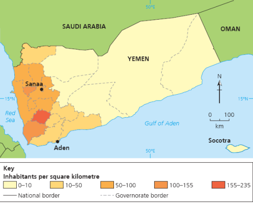

Yemen
A country where sovereignty has been challenged
1. Context

Yemen borders Saudi Arabia and Oman and has coastlines on the Red Sea and Gulf of Aden.

Most of the population is concentrated in the western highlands.
Yemen was formed in 1990 when North Yemen and South Yemen merged. It is a Low-Income Developing Country and, in the source material, ranked first in the Fragile States Index.
- Population: about 29 million in the source material.
- Capital: Sanaa, with over 2 million people.
- Strategic ports: Aden, Al Hudaydah and Al Mukalla.
- Economy: GDP per capita PPP was $2285 in 2019; agriculture 20%, industry 12%, services 68%.
- Development: HDI was 0.463, placing Yemen 177th among UN member states in 2019.
2. How Sovereignty Is Challenged
Houthi Control
- The Houthi Shia Muslim movement ousted the internationally recognised government from power in much of the north and west.
- Houthi forces seized Sanaa and claimed the government had been corrupt, unequal and unable to manage food insecurity, unemployment and poverty.
- This challenges sovereignty because the state no longer has effective authority over its own capital and territory.
External Intervention
- In 2015, a Saudi-led coalition launched air strikes against the Houthis to restore the internationally recognised government.
- The intervention was requested by the deposed President but remains controversial in relation to Article 42 of the UN Charter.
- Civilian casualties and damage to civilian places raise issues of international humanitarian law.
Separatism and Terrorism
- Separatist anti-Houthi groups in the south have sought independence for South Yemen.
- Separatists seized the port of Aden, threatening both sovereignty and territorial integrity.
- Al Qaeda attacks and Islamic State attacks on Shia mosques in Sanaa show how civil war creates space for transnational extremist activity.
3. Impacts on People and Places

Sanaa became a focus of rebel control, street protest and air-strike damage.
| People | Places |
|---|---|
| 17,700 civilians killed or injured in conflict between government forces and Houthi rebels. | Sanaa was overrun by Houthi rebels in 2015 after protests demanding the government step down. |
| Over 22 million people, around 80% of the population, required humanitarian assistance or protection. | Air strikes damaged civilian gatherings, residential areas, markets, schools, mosques, roads and airports. |
| 20 million were food insecure, including 8.4 million at risk of starvation. | Al Hudaydah is crucial because much aid enters through the port, but fighting impeded delivery. |
| 17.8 million lacked safe water and sanitation; 19.7 million lacked adequate health care. | Marib General Hospital was affected, limiting medical services for around 15,000 people including IDPs. |
4. Exam Focus
Yemen is strongest for questions on sovereignty. It shows that sovereignty is not just legal recognition; the government must also control territory, protect citizens and maintain services.
How would you link Yemen to territorial integrity?
Southern separatism threatens the territorial unity of Yemen because it seeks to break away from the recognised state. Houthi control and external air strikes mainly challenge sovereign authority, while secession would alter the state's territory.